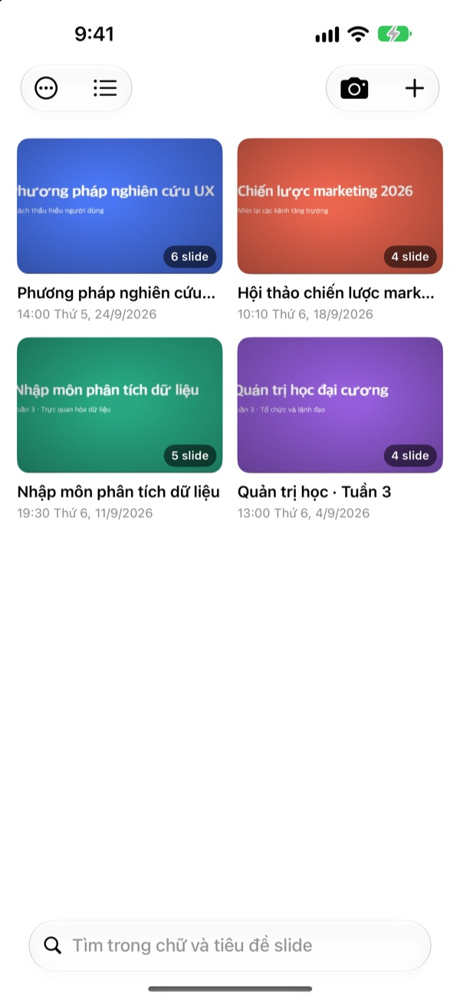
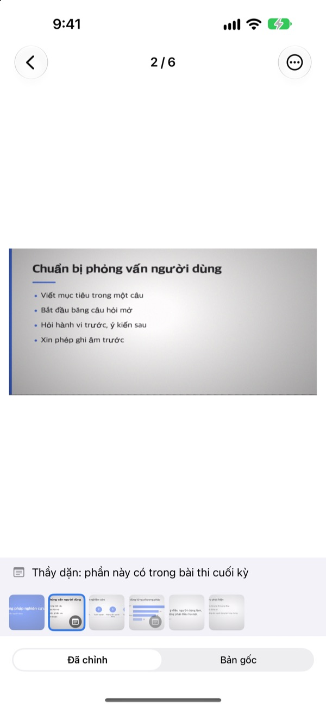
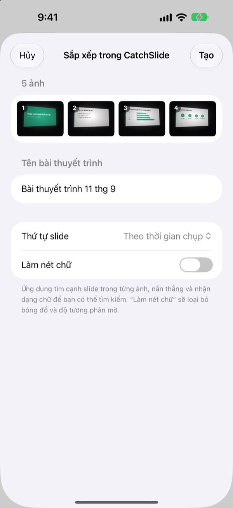
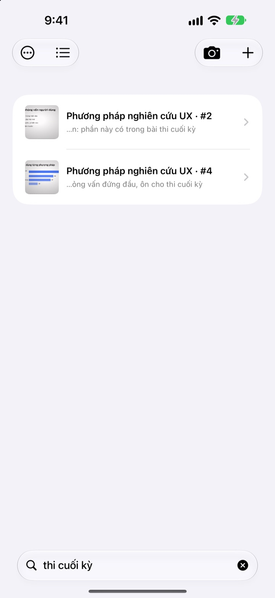

Chụp từ bên cạnh,
lưu lại như nhìn thẳng
Camera tìm bốn góc của slide, nắn ảnh cho thẳng và cắt bỏ phần xung quanh. Những slide chụp liên tiếp sẽ nằm chung trong một bài thuyết trình.
Mua một lần, dùng mọi tính năng. Không cần đăng ký gói, không cần tài khoản.

Tự tay nắn thử
Ảnh này được chụp xiên từ một chỗ ngồi bên cạnh lớp học. Đường viền xanh lá là vị trí bốn góc slide đã tìm thấy.
Mở thư viện ảnh để ôn bài mà không tìm thấy slide?
Slide chụp từ hàng ghế cuối lúc nào cũng nghiêng, lại lẫn giữa ảnh selfie và hóa đơn. Giữa lớp học yên tĩnh, chỉ tiếng màn trập thôi cũng đủ khiến bạn ngại bấm. CatchSlide chụp không tiếng động, nắn thẳng từng slide và gom lại theo bài thuyết trình.
Thẳng ngay khi bấm chụp
Camera bám theo bốn góc slide theo thời gian thực và chuyển xanh khi đã bắt được. Dù chụp xiên, slide vẫn được nắn như nhìn thẳng và cắt bỏ phông nền.
Không có tiếng màn trập. Bật Tự động chụp để ứng dụng tự chụp mỗi khi slide đổi, bỏ qua những ảnh bị rung.

Ảnh đã chụp, nhập một lần là xong
Chọn nhiều ảnh buổi học trong ứng dụng Ảnh rồi chia sẻ sang CatchSlide. Ảnh sẽ được nắn thẳng và gom thành một bài thuyết trình theo thứ tự chụp.
Bật Làm nét chữ để xóa bóng mờ và độ tương phản nhạt.

Nhớ một từ là tìm ra
CatchSlide đọc chữ trên từng slide ngay trên máy. Vài tuần sau, chỉ cần một từ là tìm lại được slide đó.
Ghi chú bạn thêm vào slide cũng tìm được. Ghi thi cuối kỳ lên vài slide, cả phần ôn thi sẽ hiện ra trong một lần tìm.

Bắt đầu với ba bước
- 1
Mở camera
Từ nút camera trong danh sách, tiện ích trên Màn hình chính hoặc Màn hình khóa.
- 2
Đưa slide vào khung
Khi các góc chuyển xanh, bấm chụp hoặc để tự động chụp lo.
- 3
Xem lại theo bài thuyết trình
Tìm kiếm, ghi chú và xuất PDF để ôn bài.
Những gì bạn làm được với một bài thuyết trình
- Ghi âm
- Vừa chụp vừa ghi âm, rồi nghe từng slide từ đúng lúc bạn chụp slide đó
- Chép lời
- Chuyển bản ghi âm thành chữ, cho biết từng slide đã nói gì và dùng được khi tìm kiếm
- Tóm tắt bằng AI
- Tóm tắt bài thuyết trình từ chữ trên slide và lời đã chép (iOS 26 trở lên, trên thiết bị hỗ trợ Apple Intelligence)
- Tài liệu ôn tập với 1, 2 hoặc 4 slide mỗi trang
- Markdown
- Tệp .zip đưa thẳng vào Notion hoặc Obsidian
- PowerPoint
- Xuất .pptx, lời đã chép nằm trong ghi chú người thuyết trình
- Gộp bài
- Chọn nhiều bài thuyết trình và gộp thành một
- Đồng bộ iCloud
- Bật lên để xem bài thuyết trình trên các thiết bị khác dùng cùng Apple ID. Mặc định tắt
- Tiện ích
- Mở camera ngay từ Màn hình chính hoặc Màn hình khóa
Nhận diện chữ, chép lời và tóm tắt bằng AI đều chạy ngay trên máy.
Mua một lần, có tất cả
CatchSlide
- Chụp không tiếng, tự động chụp và nắn thẳng
- Nhập nhiều ảnh cùng lúc từ ứng dụng Ảnh
- Xếp slide theo bài thuyết trình, tìm theo chữ và ghi chú
- Ghi âm, chép lời và tóm tắt bằng AI
- Xuất PDF, Markdown và PowerPoint
- Đồng bộ iCloud và tiện ích
Tiền tip (tùy ý)
- Nếu ứng dụng giúp ích cho bạn, bạn có thể gửi nhà phát triển một khoản tip nhỏ
- Tip không mở khóa gì thêm. Không gửi vẫn dùng đầy đủ mọi tính năng
Gửi tại màn hình Thông tin của tôi.
Không có gói đăng ký, cũng không có khoản mua thêm để mở tính năng. Giá ở nước bạn xem trên App Store.
Câu hỏi thường gặp
Chụp slide thế nào?
Mở camera và đưa slide vào khung. Khi các góc chuyển xanh, bấm nút chụp. Nếu bật tự động chụp, ứng dụng sẽ tự chụp slide tiếp theo mỗi khi slide đổi.
Có tiếng màn trập không?
Không. Ứng dụng lưu khung hình trực tiếp từ camera nên chụp im lặng ở mọi quốc gia.
Vì sao nhiều ảnh bị gom vào một bài thuyết trình?
Nếu bạn chụp ảnh tiếp theo trong vòng 5 phút sau ảnh trước, ảnh đó được tính là cùng bài thuyết trình. Chạm vào tiêu đề trong danh sách để đổi tên, và dùng Gộp bài thuyết trình để nối các bài bị tách ra.
Có thêm được ảnh đã chụp trước không?
Được. Chọn ảnh trong ứng dụng Ảnh rồi chia sẻ sang CatchSlide, hoặc chạm ＋ trong danh sách và chọn Nhập từ Ảnh. Ảnh được nắn thẳng và gom thành một bài thuyết trình theo thứ tự chụp.
Ứng dụng bắt sai góc.
Mở slide, chọn Chỉnh góc trong menu ⋯ rồi kéo bốn góc về đúng chỗ. Tự động nhận diện sẽ tìm lại, còn Toàn bộ ảnh dùng cả bức ảnh. Ảnh gốc luôn được giữ nên bạn có thể làm lại bất cứ lúc nào.
Có tìm được chữ trong slide không?
Gõ một từ vào ô tìm kiếm phía trên danh sách. Ứng dụng tìm trong chữ trên slide, tiêu đề bài thuyết trình, ghi chú và lời đã chép, rồi đưa bạn tới thẳng slide đó. Việc nhận diện chữ diễn ra trên máy.
Xuất PDF thế nào?
Trong bài thuyết trình, mở menu chia sẻ, chọn Xuất sang PDF và chọn 1, 2 hoặc 4 slide mỗi trang. Từ bảng chia sẻ, bạn có thể lưu vào Tệp hoặc gửi sang ứng dụng khác.
Đổi thứ tự hoặc xóa slide thế nào?
Trong bài thuyết trình, chạm và giữ một slide rồi kéo để đổi thứ tự. Menu hiện ra khi chạm giữ cho phép xóa hoặc chia sẻ từng slide, còn Chọn giúp xóa nhiều slide một lúc.
Ghi âm và tóm tắt bằng AI dùng thế nào?
Bật Ghi âm ở phía trên màn hình camera rồi chụp, mỗi slide sẽ kèm âm thanh của lúc đó. Trong Ghi chú bài thuyết trình, nút Tóm tắt bằng AI sẽ tóm tắt từ chữ trên slide và lời đã chép. Tính năng này cần iOS 26 trở lên trên thiết bị hỗ trợ Apple Intelligence.
Slide và bản ghi âm của tôi được lưu ở đâu?
Tất cả nằm trên máy của bạn. Chỉ khi bật Đồng bộ trong Thông tin của tôi, dữ liệu mới được tải lên iCloud của chính bạn, và không cần tạo tài khoản. Xem thêm trong Chính sách quyền riêng tư.
Có câu hỏi, lỗi cần báo hay ý tưởng? Hãy gửi email tới leeo@kakao.com.